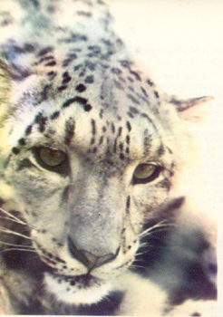

<head>
<meta http-equiv="Content-Type" content="text/html; charset=windows-1252">
<meta name="GENERATOR" content="Microsoft FrontPage 4.0">
<meta name="ProgId" content="FrontPage.Editor.Document">
<title>New Page 1</title>
<meta http-equiv="Content-Type" content="text/html; charset=windows-1252">
<meta name="GENERATOR" content="Microsoft FrontPage 4.0">
<meta name="ProgId" content="FrontPage.Editor.Document">
<title>ECONOMICALLY IMPORTANT PLANTS OF INDIA compiled by K</title>
<meta http-equiv="Content-Type" content="text/html; charset=windows-1252">
<meta name="GENERATOR" content="Microsoft FrontPage 4.0">
<meta name="ProgId" content="FrontPage.Editor.Document">
<title>ECONOMICALLY IMPORTANT PLANTS OF INDIA</title>
<meta http-equiv="Content-Type" content="text/html; charset=windows-1252">
<meta name="GENERATOR" content="Microsoft FrontPage 4.0">
<meta name="ProgId" content="FrontPage.Editor.Document">
<title>New Page 1</title>
<META HTTP-EQUIV="CONTENT-TYPE" CONTENT="text/html; charset=windows-1252">
<TITLE>Aegle marmelos </TITLE>
<META NAME="GENERATOR" CONTENT="Microsoft FrontPage 4.0">
<META NAME="CREATED" CONTENT="20010726;17265013">
<META NAME="CHANGEDBY" CONTENT="L.Sowmya">
<META NAME="CHANGED" CONTENT="20020726;13003551">
<META NAME="DESCRIPTION" CONTENT="Economically Important Plants">
<META NAME="KEYWORDS" CONTENT="Abies pindrow">
<META NAME="ProgId" CONTENT="FrontPage.Editor.Document">
<STYLE>
	<!--
		P { color: #2c9a97 }
	-->
	</STYLE>
<meta name="Microsoft Theme" content="none">
<link>
</head>

<body LANG="en-US" bgcolor="#CCCCCC" text="#009999">
<P><A NAME="begin"></A>
</P>
<table border="1" width="100%">
  <tr>
    <td width="100%" bgcolor="#1658BC">
      <P ALIGN=CENTER><b><font face="Verdana" size="6" color="#FFFFFF">Digitized
      Inventory of Animal Resources: Mammalia&nbsp;</font></b> <font color="#FFFFFF"><br>
      <b>
      Principal Investigator: Dr. R. J. B Alfred, Co-Investigator: Dr. Rama Krishna, Contributed by:
      Dr. M.S.Pradhan</b></font><br>
      </P>
    </td>
  </tr>
</table>
<p ALIGN="CENTER">&nbsp;</p>
<p ALIGN="CENTER"><a href="http://stp.unipune.ernet.in/zsi/photomap.html?code=66"><i style="mso-bidi-font-style:normal"><font color="#808000"><font face="Arial" size="6"><b style="mso-bidi-font-weight: normal; mso-ansi-font-size: 9.0pt; mso-bidi-font-size: 12.0pt; mso-fareast-font-family: Times New Roman; mso-bidi-font-family: Times New Roman; mso-ansi-language: EN-US; mso-fareast-language: EN-US; mso-bidi-language: AR-SA"><span style="mso-ansi-font-size: 9.0pt; mso-bidi-font-size: 12.0pt; mso-fareast-font-family: Times New Roman; mso-bidi-font-family: Times New Roman; mso-ansi-language: EN-US; mso-fareast-language: EN-US; mso-bidi-language: AR-SA; mso-bidi-font-weight: normal">Uncia
uncia</span></b></font></font></i><font face="Arial" size="6" color="#808000"><b style="mso-bidi-font-weight: normal; mso-ansi-font-size: 9.0pt; mso-bidi-font-size: 12.0pt; mso-fareast-font-family: Times New Roman; mso-bidi-font-family: Times New Roman; mso-ansi-language: EN-US; mso-fareast-language: EN-US; mso-bidi-language: AR-SA"><span style="mso-bidi-font-size: 12.0pt; mso-fareast-font-family: Times New Roman; mso-bidi-font-family: Times New Roman; mso-ansi-language: EN-US; mso-fareast-language: EN-US; mso-bidi-language: AR-SA; mso-ansi-font-size: 9.0pt; mso-bidi-font-weight: normal">
(Schreber)</span></b></font></a></p>
<P ALIGN=LEFT><font size="6" face="Comic Sans MS" color="#009999"><b>&nbsp;&nbsp;&nbsp;&nbsp;&nbsp;&nbsp;&nbsp;&nbsp;&nbsp;&nbsp;&nbsp;&nbsp;&nbsp;&nbsp;&nbsp;&nbsp;&nbsp;&nbsp;&nbsp;&nbsp;</b></font></P>
<P ALIGN=LEFT><A HREF="#Taxonomic Details"><FONT FACE="Comic Sans MS">Taxonomic 
  Details</FONT> </A><FONT FACE="Comic Sans MS"><BR>
  ----- </FONT><A HREF="#Scientific Name"><FONT FACE="Comic Sans MS">Scientific Name</FONT></A><FONT FACE="Comic Sans MS"><BR>
  ----- </FONT><A HREF="#Classification"><FONT FACE="Comic Sans MS">Classification</FONT></A><FONT FACE="Comic Sans MS"><BR>
  ----- </FONT><A HREF="#Synonyms"><FONT FACE="Comic Sans MS">Synonyms</FONT></A><FONT FACE="Comic Sans MS"><BR>
  ----- </FONT><A HREF="#Common Names"><FONT FACE="Comic Sans MS">Common Names</FONT></A><FONT FACE="Comic Sans MS"><BR>
  </FONT><A HREF="#Other Biological Details"><FONT FACE="Comic Sans MS">Other 
  Biological Details</FONT></A><FONT FACE="Comic Sans MS"><BR>
  ----- </FONT><A HREF="#Habit and Habitat"><FONT FACE="Comic Sans MS">Habit and 
  Habitat</FONT></A><FONT FACE="Comic Sans MS"><BR>
  ----- </FONT><A HREF="#Distribution"><FONT FACE="Comic Sans MS">Distribution</FONT></A><FONT FACE="Comic Sans MS"><BR>
  ---------- </FONT><A HREF="#Extend of Occurance"><FONT FACE="Comic Sans MS">Extend of
Occurrence</FONT></A><FONT FACE="Comic Sans MS"><BR>
  ---------- </FONT><A HREF="#Area of occurance"><FONT FACE="Comic Sans MS">Area of
</FONT></A><A HREF="#Area of occurance"><font face="Comic Sans MS">occurrence</font></A><FONT FACE="Comic Sans MS"><BR>
  ---------- </FONT><A HREF="#Altitude:"><FONT FACE="Comic Sans MS">Altitude</FONT></A><FONT FACE="Comic Sans MS"><BR>
  ---------- </FONT><A HREF="#Population:"><FONT FACE="Comic Sans MS">Population</FONT></A><FONT FACE="Comic Sans MS"><BR>
  ----- </FONT>
  <A HREF="#Conservation Status:"><FONT FACE="Comic Sans MS">Conservation Status</FONT></A><FONT FACE="Comic Sans MS"><BR>
  ----- </FONT>
  <A HREF="#Diagnostic Features"><FONT FACE="Comic Sans MS">Diagnostic 
  Features</FONT></A><FONT FACE="Comic Sans MS"><BR>
  ----- </FONT>
<a HREF="#Breeding system"><FONT FACE="Comic Sans MS">Breeding system</FONT></a><FONT FACE="Comic Sans MS"><BR>
  </FONT><A HREF="#Miscellaneous Information"><FONT FACE="Comic Sans MS">Miscellaneous 
  Information</FONT></A><FONT FACE="Comic Sans MS"><BR>
  </FONT><A HREF="#Literature"><FONT FACE="Comic Sans MS">Literature</FONT></A></P>
<HR SIZE=3 COLOR="#0000ff">
<P><A NAME="Taxonomic Details"></A><FONT SIZE=6><FONT FACE="Monotype Corsiva"><FONT COLOR="#1658bc"><u>Taxonomic 
  Details</u></FONT></FONT></FONT> </P>
<HR SIZE=3 COLOR="#0000ff">
<P><A NAME="Scientific Name"></A><A NAME="Classification"></A><A NAME="Synonyms"></A><A NAME="Common Names"></A> 
  <FONT FACE="Comic Sans MS, sans-serif"><U>Scientific Name</U> :&nbsp;</FONT><font face="Comic Sans MS, sans-serif">&nbsp;</font><a href="http://stp.unipune.ernet.in/zsi/photomap.html?code=66"><i style="mso-bidi-font-style:normal"><font face="Arial" size="6" color="#808000"><b style="mso-bidi-font-weight: normal; mso-ansi-font-size: 9.0pt; mso-bidi-font-size: 12.0pt; mso-fareast-font-family: Times New Roman; mso-bidi-font-family: Times New Roman; mso-ansi-language: EN-US; mso-fareast-language: EN-US; mso-bidi-language: AR-SA"><span style="mso-ansi-font-size: 9.0pt; mso-bidi-font-size: 12.0pt; mso-fareast-font-family: Times New Roman; mso-bidi-font-family: Times New Roman; mso-ansi-language: EN-US; mso-fareast-language: EN-US; mso-bidi-language: AR-SA; mso-bidi-font-weight: normal">Uncia
uncia</span></b></font></i><font face="Arial" size="6" color="#808000"><b style="mso-bidi-font-weight: normal; mso-ansi-font-size: 9.0pt; mso-bidi-font-size: 12.0pt; mso-fareast-font-family: Times New Roman; mso-bidi-font-family: Times New Roman; mso-ansi-language: EN-US; mso-fareast-language: EN-US; mso-bidi-language: AR-SA"><span style="mso-bidi-font-size: 12.0pt; mso-fareast-font-family: Times New Roman; mso-bidi-font-family: Times New Roman; mso-ansi-language: EN-US; mso-fareast-language: EN-US; mso-bidi-language: AR-SA; mso-ansi-font-size: 9.0pt; mso-bidi-font-weight: normal">
(Schreber)</span></b></font></a></P>
<P><font face="Comic Sans MS" size="3"><U>Classification</U><b><U>:</U></b></font></P>
<blockquote>
  <blockquote>
    <blockquote>
      <blockquote>
        <blockquote>
          <blockquote>
<P><font face="Arial" size="4"><span style="mso-bidi-font-size: 12.0pt; color: black">Order:<i style="mso-bidi-font-style:normal">Carnivora</i><o:p>
</o:p>
</span></font></P>
<P><font face="Arial" size="4"><span style="mso-bidi-font-size: 12.0pt; color: black">Family:<i style="mso-bidi-font-style:normal">Felide</i><o:p>
</o:p>
</span></font></P>
            <span style="mso-bidi-font-size: 12.0pt; mso-fareast-font-family: Times New Roman; mso-bidi-font-family: Times New Roman; color: black; mso-ansi-language: EN-US; mso-fareast-language: EN-US; mso-bidi-language: AR-SA"><font face="Arial" size="4">Subfamily:</font><i style="mso-bidi-font-style:normal"><font face="Arial" size="4">Pantherinae</font></i></span>
          </blockquote>
        </blockquote>
      </blockquote>
    </blockquote>
  </blockquote>
</blockquote>
<P><font face="Comic Sans MS, sans-serif" size="3">
  <U>Synonyms</U>:&nbsp;&nbsp;&nbsp;&nbsp;&nbsp;&nbsp;&nbsp;&nbsp;&nbsp;&nbsp;&nbsp;&nbsp;&nbsp;&nbsp;</font><font face="Arial" size="4">&nbsp;
<i style="mso-bidi-font-style:normal"><span style="mso-bidi-font-size: 12.0pt; mso-fareast-font-family: Times New Roman; mso-bidi-font-family: Times New Roman; color: black; mso-ansi-language: EN-US; mso-fareast-language: EN-US; mso-bidi-language: AR-SA">Felis uncia, Schreber, Panthera uncia (Schreber), irbis, schneideri,
uncoides</span></i> </font></P>
<P><font face="Comic Sans MS, sans-serif" size="3"><BR>
  <U>Common Names</U><SPAN STYLE="text-decoration: none">:&nbsp;</SPAN></font><SPAN STYLE="text-decoration: none"><FONT FACE="Comic Sans MS, sans-serif">&nbsp;&nbsp;&nbsp;&nbsp;&nbsp;</FONT><font size="4" face="Arial">&nbsp;</font></SPAN><font size="4" face="Arial"><span style="font-size:9.0pt;
mso-bidi-font-size:12.0pt;font-family:Verdana;color:black">Snow Leopard</span><span style="font-size:9.0pt;mso-bidi-font-size:12.0pt;font-family:Verdana;
mso-fareast-font-family:&quot;Arial Unicode MS&quot;;color:black"><o:p>
</span>
<span style="mso-bidi-font-size: 12.0pt; color: black">&nbsp;</span><i style="mso-bidi-font-style:
normal"><span style="font-size:9.0pt;mso-bidi-font-size:12.0pt;font-family:
Verdana;color:black">Regional Names:</span></i><span style="font-size:9.0pt;
mso-bidi-font-size:12.0pt;font-family:Verdana;color:black">&nbsp;Hindi: Bharal-he,
Bhutia: Ikar, Zig, Sachak, Himachal: Thurwagh, Garhwali: Burhel haye, Ladaki:
Shan, Kashmiri: Sheen-e-suh</span><span style="mso-bidi-font-size: 12.0pt; mso-fareast-font-family: Arial Unicode MS; color: black"><o:p>
</span></font><span style="font-size:9.0pt;
mso-bidi-font-size:12.0pt;font-family:Verdana;mso-fareast-font-family:&quot;Arial Unicode MS&quot;;
color:black">
</o:p>
</span>
</P>
<p class="MsoNormal"><span style="font-size:10.0pt;mso-bidi-font-size:12.0pt;
color:black">&nbsp;<o:p>
</o:p>
</span></p>
<P><FONT FACE="Comic Sans MS, sans-serif"><SPAN STYLE="text-decoration: none">
<b><font size="4" color="#000000">
  <BR>
</font></b>
  </SPAN></FONT><font face="Comic Sans MS"><BR>
  </font><BR>
</P>
<P ALIGN=RIGHT><A HREF="#begin"><U><FONT FACE="Comic Sans MS">Back to
Top</FONT></U></A></P>
<HR SIZE=3 COLOR="#0000ff">
<P><A NAME="Other Biological Details"></A><FONT SIZE=3><FONT SIZE=6><FONT FACE="Monotype Corsiva"><FONT COLOR="#1658bc"><u>Other 
  Biological Details</u></FONT></FONT></FONT></FONT> 
</P>
<p class="MsoNormal" style="text-align:justify"><font face="Arial" size="4"><i style="mso-bidi-font-style:
normal"><span style="mso-bidi-font-size: 12.0pt"><font color="#FF0000"><b>Threats:</b></font></span><span style="mso-bidi-font-size: 12.0pt; color: black">&nbsp;</span></i><span style="mso-bidi-font-size: 12.0pt; color: black"> Interspecific
competition, Habitat Fragmentation, Human Interference, Hunting, Trade, Decline
in prey species Insurgency/Terrorism/War, Poaching for illegal trade etc.;&nbsp;<i style="mso-bidi-font-style:normal">Effect
of threats on population (Perceived or inferred)</i>:&nbsp;Declining<o:p>
</o:p>
</span></font></p>
<font face="Arial" size="4">
<i style="mso-bidi-font-style:normal"><span style="mso-bidi-font-size: 12.0pt; mso-fareast-font-family: Times New Roman; mso-bidi-font-family: Times New Roman; mso-ansi-language: EN-US; mso-fareast-language: EN-US; mso-bidi-language: AR-SA"><font color="#FF0000"><b>Trade:</b></font></span><span style="mso-bidi-font-size: 12.0pt; mso-fareast-font-family: Times New Roman; mso-bidi-font-family: Times New Roman; color: black; mso-ansi-language: EN-US; mso-fareast-language: EN-US; mso-bidi-language: AR-SA">&nbsp;</span></i><span style="mso-bidi-font-size: 12.0pt; color: black"><span style="font-size:9.0pt;mso-bidi-font-size:12.0pt;font-family:Verdana;
mso-fareast-font-family:&quot;Times New Roman&quot;;mso-bidi-font-family:&quot;Times New Roman&quot;;
color:black;mso-ansi-language:EN-US;mso-fareast-language:EN-US;mso-bidi-language:
AR-SA"> Local, Commercial, International;&nbsp;<i style="mso-bidi-font-style:
normal">Parts in trade</i>:&nbsp;Skin, Live animals, Fur, Body parts (Roberts
1997);&nbsp;<i style="mso-bidi-font-style:normal">Effect of trade on population
(Perceived or inferred)</i>:&nbsp;Declining</span>
</span></font>
<P>&nbsp; 
</P>
<HR SIZE=3 COLOR="#0000ff">
<P STYLE="margin-bottom: 0cm"><A NAME="Habit and Habitat"></A><U><FONT FACE="Comic Sans MS">HABIT 
  &amp; HABITAT</FONT></U><font face="Comic Sans MS" size="3">&nbsp;&nbsp;</P>
</font>
<p class="MsoNormal" style="text-align:justify"><span style="mso-bidi-font-size: 12.0pt; color: black"><font face="Arial" size="4">Sighting of a Snow
Leopard is rare as it is extremely elusive and shy animal. Climate of the region
within the distributional range of Snow Leopard is characterized by cold and
arid conditions. The prey species consist of ibex, blue sheep, markhor,
Himalayan tahr, deer, wild boar, gazelles, pikas, marmots, rodents etc. It also
lifts sheep, goats, and ponies from nearby villages however blue sheep (Bharal)
appears to be major prey species of Snow Leopard. The Snow Leopard likes
solitary existence and it appears to travel widely to hunt over a very extensive
area. Home range of snow leopard as reported in the technical report of Wildlife
Institute of India (1990) is 19 sq. km.<o:p>
</o:p>
</font></span></p>
<p class="MsoNormal" style="text-align:justify"><font face="Arial" size="4"><span style="mso-bidi-font-size: 12.0pt; color: black">Basically it is
nocturnal in behaviour. During daytime it takes shelter in a natural cavern or
cleft beneath overhanging rocks. They are fond of sunning themselves on some
rock at times. Another remarkable behavior of Snow Leopard is it emits a low
'rumble' and a coughing roar, but it never roars like other big cats. A pair of
Snow Leopard may be seen during breeding seasons (Jan-Feb). 2-3 cubs are born in
May to June after the gestation period of 2-3 months. The cubs accompany their
mother till following winter. The pre and post natal mortality may be high due
to lack of food. Captive breeding program has proved to be successful recently
in some zoos.<span style="mso-bidi-font-size: 12.0pt; mso-fareast-font-family: Arial Unicode MS; color: black"><o:p>
</o:p>
</span></span></font></p>
<p class="MsoNormal"><font face="Arial" size="4"><span style="mso-bidi-font-size: 12.0pt; color: black">&nbsp;</span><b><i style="mso-bidi-font-style:
normal"><span style="mso-bidi-font-size: 12.0pt"><font color="#008000">Habitat Structure:</font></span></i><span style="mso-bidi-font-size: 12.0pt"><font color="#008000">&nbsp;</font></span></b><span style="mso-bidi-font-size: 12.0pt; color: black">The Snow
Leopard inhabits the areas in Himalayas between alpine coniferous forests above
tree line and snow. But sometimes it can also be seen in woodlands. Moreover it
inhabits the most inaccessible highly rugged terrains mainly in cold arid
ecosystems at high altitudes. The Habitat Structure at lower altitudes is
decreasing with general decline.<span style="mso-bidi-font-size: 12.0pt; mso-fareast-font-family: Arial Unicode MS; color: black"><o:p>
</o:p>
</span></span></font></p>
<font face="Comic Sans MS" size="3">
<p class="MsoNormal" style="margin-left:1.0in;text-align:justify;text-indent:
-1.0in">&nbsp;<b>&nbsp;&nbsp;&nbsp;&nbsp;&nbsp;&nbsp;&nbsp;&nbsp;&nbsp;&nbsp;&nbsp;&nbsp;&nbsp;</b></p>
</font>
<p>&nbsp;</p>
<p align=RIGHT style="margin-bottom: 0cm"><font face="Comic Sans MS" size="3"><a href="#begin">Back 
  to Top</a></font></p>
<P STYLE="margin-bottom: 0cm">&nbsp;</P>
<P><font size="3"><A NAME="Distribution"></A><A NAME="Extend of Occurance"></A><A NAME="Area of occurance:"></A><A NAME="Altitude:"></A><A NAME="Population:"></a><A NAME="Conservation status:"></A> 
  <FONT FACE="Comic Sans MS"><U>Distribution</U>:</FONT></font></P>
<P><font face="Arial" size="4"><span style="mso-bidi-font-size: 12.0pt; mso-fareast-font-family: Times New Roman; mso-bidi-font-family: Times New Roman; color: black; mso-ansi-language: EN-US; mso-fareast-language: EN-US; mso-bidi-language: AR-SA">Within Indian limits Snow Leopard is distributed
at very high altitudes in the Himalayas from Jammu and Kashmir to Sikkim and
further east to Arunachal Pradesh.</span></font></P>
<p class="MsoNormal" style="margin-left:1.0in;text-align:justify;text-indent:
-1.0in"><font face="Arial" size="4"><span style="mso-bidi-font-size: 12.0pt; mso-fareast-font-family: Times New Roman; mso-bidi-font-family: Times New Roman; color: black; mso-ansi-language: EN-US; mso-fareast-language: EN-US; mso-bidi-language: AR-SA"><i style="mso-bidi-font-style:normal">No.</i><i style="mso-bidi-font-style: normal; mso-bidi-font-size: 12.0pt; mso-fareast-font-family: Times New Roman; mso-bidi-font-family: Times New Roman; color: black; mso-ansi-language: EN-US; mso-fareast-language: EN-US; mso-bidi-language: AR-SA">
</i><i style="mso-bidi-font-style:normal">of Locations:&nbsp;</i>Many;&nbsp;<i style="mso-bidi-font-style:normal">Type:&nbsp;</i>Fragmented</span></font></p>
<P><font face="Comic Sans MS" size="3"><U>Extent of </U><u>Occurrence&nbsp;&nbsp;&nbsp;</u>&nbsp;&nbsp;&nbsp;&nbsp;&nbsp;&nbsp;&nbsp;&nbsp;&nbsp;&nbsp;&nbsp;&nbsp;&nbsp;&nbsp;&nbsp;&nbsp;&nbsp;</font><font face="Arial" size="4">&nbsp;&nbsp;&nbsp;
<span style="mso-bidi-font-size: 12.0pt; mso-fareast-font-family: Times New Roman; mso-bidi-font-family: Times New Roman; color: black; mso-ansi-language: EN-US; mso-fareast-language: EN-US; mso-bidi-language: AR-SA">greater than 20000 sq.kms.</span>
</font></P>
<P STYLE="margin-bottom: 0cm"><font face="Comic Sans MS" size="3"><U>Area of occurrence:&nbsp;&nbsp;&nbsp;</U>&nbsp;&nbsp;&nbsp;&nbsp;&nbsp;&nbsp;&nbsp;&nbsp;&nbsp;&nbsp;&nbsp;&nbsp;&nbsp;&nbsp;&nbsp;&nbsp;&nbsp;&nbsp;&nbsp;&nbsp;&nbsp;&nbsp;&nbsp;&nbsp;</font><font size="4" face="Arial"><span style="mso-bidi-font-size: 12.0pt; mso-fareast-font-family: Times New Roman; mso-bidi-font-family: Times New Roman; color: black; mso-ansi-language: EN-US; mso-fareast-language: EN-US; mso-bidi-language: AR-SA">greater than 2001 sq.kms.</span> 
</font></P>
<P STYLE="margin-bottom: 0cm"><font face="Comic Sans MS" size="3"><U>Altitude:</U></font><font color="#000000" face="Comic Sans MS" size="4">&nbsp;&nbsp;&nbsp;&nbsp;&nbsp;&nbsp;&nbsp;&nbsp;&nbsp;&nbsp;&nbsp;&nbsp;&nbsp;&nbsp;&nbsp;&nbsp;&nbsp;&nbsp;&nbsp;&nbsp;&nbsp;&nbsp;&nbsp;&nbsp;&nbsp;&nbsp;&nbsp;&nbsp;&nbsp;&nbsp;&nbsp;&nbsp;&nbsp;&nbsp;</font><font size="4" face="Arial"><font color="#000000">&nbsp;&nbsp;
<span style="font-size:9.0pt;mso-bidi-font-size:12.0pt;
font-family:Verdana;mso-fareast-font-family:&quot;Times New Roman&quot;;mso-bidi-font-family:
&quot;Times New Roman&quot;;color:black;mso-ansi-language:EN-US;mso-fareast-language:
EN-US;mso-bidi-language:AR-SA">3000-5500 m</span></font><BR>
</font><font face="Comic Sans MS" size="3">
  <BR>
  <U>Population:</U>&nbsp; </font></P>
<p class="MsoNormal" style="text-align:justify"><font face="Arial" size="4"><i style="mso-bidi-font-style:
normal"><b><span style="mso-bidi-font-size: 12.0pt"><font color="#008000">Global Population:&nbsp;</font></span></b></i><span style="mso-bidi-font-size: 12.0pt; color: black">5000-7000(Roberts
1997);&nbsp;<i style="mso-bidi-font-style:normal">No.</i><i style="mso-bidi-font-style: normal; mso-bidi-font-size: 12.0pt; color: black">
</i><i style="mso-bidi-font-style:normal">of mature individuals in
all the populations:&nbsp;</i>greater than 2500&nbsp;<o:p>
</o:p>
</span></font></p>
<p class="MsoNormal" style="text-align:justify"><font face="Arial" size="4"><i style="mso-bidi-font-style:
normal"><b><span style="mso-bidi-font-size: 12.0pt"><font color="#008000">Captive Population:</font></span></b><span style="mso-bidi-font-size: 12.0pt; color: black">&nbsp;</span></i><span style="mso-bidi-font-size: 12.0pt; color: black">Males: 4 + Females: 4 = Total: 8 in Indian Zoos; Males: 222 +
Females: 250 + Unsexed: 4 = Total: 476 in 137 Zoos abroad (CAMP Report, 1998).<span style="font-size:9.0pt;mso-bidi-font-size:12.0pt;font-family:Verdana;
mso-fareast-font-family:&quot;Arial Unicode MS&quot;;color:black"><o:p>
</o:p>
</span></span></font></p>
<p class="MsoNormal"><font face="Arial" size="4"><b><span style="mso-bidi-font-size: 12.0pt"><font color="#008000">&nbsp;</font><i style="mso-bidi-font-style:
normal"><font color="#008000">Life span:&nbsp;</font></i></span></b><span style="mso-bidi-font-size: 12.0pt; color: black"> (Wild):&nbsp;Not
Known;&nbsp;(Captivity):&nbsp;Generation Time 10 Years (CAMP Report, 1998)<span style="font-size:9.0pt;mso-bidi-font-size:12.0pt;font-family:Verdana;
mso-fareast-font-family:&quot;Arial Unicode MS&quot;;color:black"><o:p>
</o:p>
</span></span></font></p>
<p class="MsoNormal"><font face="Arial" size="4"><span style="mso-bidi-font-size: 12.0pt; color: black">&nbsp;</span><i style="mso-bidi-font-style:
normal"><b><span style="mso-bidi-font-size: 12.0pt"><font color="#008000">Population Trend:&nbsp;</font></span></b></i><span style="mso-bidi-font-size: 12.0pt; color: black">Population size
declining with general decline.<span style="mso-bidi-font-size: 12.0pt; mso-fareast-font-family: Arial Unicode MS; color: black"><o:p>
</span></span></font><span style="font-size:9.0pt;
mso-bidi-font-size:12.0pt;font-family:Verdana;mso-fareast-font-family:&quot;Arial Unicode MS&quot;;
color:black">
</o:p>
</span></p>
<P STYLE="margin-bottom: 0cm">&nbsp;</P><P STYLE="margin-bottom: 0cm"><font face="Comic Sans MS" size="3"><U>Conservation status:&nbsp;&nbsp;&nbsp;</U>&nbsp;&nbsp;&nbsp;&nbsp;&nbsp;&nbsp;&nbsp;&nbsp;&nbsp;&nbsp;&nbsp;&nbsp;&nbsp;&nbsp;&nbsp;&nbsp;&nbsp;&nbsp;&nbsp;&nbsp;&nbsp;&nbsp;&nbsp;&nbsp;&nbsp;&nbsp;&nbsp;
</font><font face="Arial" size="5" color="#FF0000"><b><span style="mso-bidi-font-size: 12.0pt">Non-Endemic
</span>&nbsp; <b style="mso-bidi-font-weight:normal"><span style="font-size:9.0pt;mso-bidi-font-size:12.0pt;font-family:Verdana;
color:black">Endangered</span></b><o:p>
 </b></font><span style="color:black"><font size="4" face="Arial">
</o:p>
</font>
</span><P STYLE="margin-bottom: 0cm"><font size="4" face="Arial"><BR>

<i style="mso-bidi-font-style:
normal"><span style="font-size:9.0pt;mso-bidi-font-size:12.0pt;font-family:
Verdana;color:black">CITES APPENDIX:</span></i><span style="font-size:9.0pt;
mso-bidi-font-size:12.0pt;font-family:Verdana;color:black">&nbsp;I;&nbsp;<i style="mso-bidi-font-style:normal">Indian
Wildlife (Protection) Act (1972) (As </i><i style="mso-bidi-font-style: normal; mso-bidi-font-size: 12.0pt; color: black">amended</i><i style="mso-bidi-font-style:normal">
</i><i style="mso-bidi-font-style: normal; mso-bidi-font-size: 12.0pt; color: black">up to</i><i style="mso-bidi-font-style:normal">
2002):</i>&nbsp;Schedule I;&nbsp;Part
I;&nbsp;<i style="mso-bidi-font-style:normal">Indian Red Data Book (IUCN, 1994):</i>&nbsp;Endangered;&nbsp;<i style="mso-bidi-font-style:normal">IUCN
(1998)</i> (Proposed):&nbsp;Endangered (National) and Data Deficient (Global);&nbsp;<i style="mso-bidi-font-style:
normal">IUCN (2002)</i> (Proposed):&nbsp;Endangered (Global) based on Version
3.1 2001 (IUCN, 2003);&nbsp;</span><span style="mso-bidi-font-size: 12.0pt; mso-fareast-font-family: Arial Unicode MS; color: black"><o:p>
</o:p>
</span>

</font><font face="Comic Sans MS" size="3">

  <BR>
<span style="mso-tab-count:1">&nbsp;&nbsp;&nbsp;&nbsp;&nbsp;&nbsp;&nbsp;&nbsp;&nbsp; </span>
  <P STYLE="margin-bottom: 0cm"><font face="Comic Sans MS" size="3"><A NAME="Diagnostic Features"></A><A NAME="Breeding system"></A><U>DIAGNOSTIC 
  FEATURES</U>:</font></P>

</font>
<p class="MsoNormal" style="text-align:justify"><font face="Arial" size="4"><span style="mso-bidi-font-size: 12.0pt; color: black">The Snow Leopard is
one of the most beautiful large cat reported from this region. It is of moderate
size possessing square head with short muzzle, high forehead and vertical chin.
It also shows possession of some traits of smaller cats. It is slightly smaller
than common leopard. It has relatively short but stout limbs and a
characteristically long disproportionate and upwardly curved furry tail. Iris
pale yellow grey. Ears short and round. Feet well padded. The coat is dense
short, soft and tuft especially in winter. Ground colour soft grey, sometimes
with rufous, buff or yellow tinge. The fur is beautiful possessing large rosettes
which may be pale and less distinct all over the body and tail.
However, the head, nape and lower parts of the limbs possess solid small and
darker spots. Ventrum is white occasionally with a few light spots. The ears
are black with a large yellow spots on each of them.&nbsp;<o:p>
</o:p>
</span></font></p>
<p class="MsoNormal" style="text-align:justify"><font face="Arial" size="4"><font color="#008000"><b><i style="mso-bidi-font-style:
normal"><span style="mso-bidi-font-size: 12.0pt">Measurements:</span></i><span style="mso-bidi-font-size: 12.0pt">&nbsp;</span></b></font><span style="font-size:9.0pt;
mso-bidi-font-size:12.0pt;font-family:Verdana;color:black">(In cm): Head
and Body Length: 100-150; Tail Length: 90.0-105.0; Height at shoulder:
50.0-60.0.</span><span style="font-size:9.0pt;mso-bidi-font-size:12.0pt;font-family:Verdana;
mso-fareast-font-family:&quot;Arial Unicode MS&quot;;color:black"><o:p>
</o:p>
</span></font></p>
<p class="MsoNormal"><font face="Arial" size="4"><b><font color="#008000"><span style="mso-bidi-font-size: 12.0pt">&nbsp;</span><i style="mso-bidi-font-style:
normal"><span style="font-size:9.0pt;mso-bidi-font-size:12.0pt;font-family:
Verdana;color:black">Weight:</span></i></font></b><span style="font-size:9.0pt;mso-bidi-font-size:
12.0pt;font-family:Verdana;color:black">&nbsp;(In Kg): 30.0-40.0 </span><font face="Comic Sans MS" size="4" color="#000000">&nbsp;</font></font></p>
<p>&nbsp;</p>
<P ALIGN=RIGHT><A HREF="#begin"><FONT FACE="Comic Sans MS">Back to
Top</FONT></A><FONT FACE="Comic Sans MS"> </FONT>
</P>
<HR SIZE=3 COLOR="#0000ff">
<P><A NAME="Miscellaneous Information2"></A><A NAME="Miscellaneous Information1"></A>
 <FONT SIZE=6><FONT FACE="Monotype Corsiva"><FONT COLOR="#1658bc">
<U>Miscellaneous
Information</U>&nbsp;&nbsp;</FONT></FONT></FONT>
</P>
<P><font face="Arial" size="4"><i style="mso-bidi-font-style:normal"><b><span style="mso-bidi-font-size: 12.0pt; mso-fareast-font-family: Times New Roman; mso-bidi-font-family: Times New Roman; mso-ansi-language: EN-US; mso-fareast-language: EN-US; mso-bidi-language: AR-SA"><font color="#008000">Intraspecific variations:</font></span></b></i><span style="font-size:9.0pt;
mso-bidi-font-size:12.0pt;font-family:Verdana;mso-fareast-font-family:&quot;Times New Roman&quot;;
mso-bidi-font-family:&quot;Times New Roman&quot;;color:black;mso-ansi-language:EN-US;
mso-fareast-language:EN-US;mso-bidi-language:AR-SA">&nbsp;No subspecies</span>
</font>
</P>
<p class="MsoNormal" style="margin-left:1.0in;text-align:justify;text-indent:
-1.0in"><span style="mso-tab-count:1"><font face="Arial" size="4"><font color="#008000"><b><i style="mso-bidi-font-style:normal"><span style="mso-bidi-font-size: 12.0pt; mso-fareast-font-family: Times New Roman; mso-bidi-font-family: Times New Roman; mso-ansi-language: EN-US; mso-fareast-language: EN-US; mso-bidi-language: AR-SA">Sighting Records:&nbsp;</span></i></b><span style="mso-bidi-font-size: 12.0pt; mso-fareast-font-family: Times New Roman; mso-bidi-font-family: Times New Roman; mso-ansi-language: EN-US; mso-fareast-language: EN-US; mso-bidi-language: AR-SA"> <b>
</b></span></font><span style="mso-bidi-font-size: 12.0pt; mso-fareast-font-family: Times New Roman; mso-bidi-font-family: Times New Roman; color: black; mso-ansi-language: EN-US; mso-fareast-language: EN-US; mso-bidi-language: AR-SA"> <i style="mso-bidi-font-style:
normal">Type of Sighting:</i>&nbsp;;&nbsp;<i style="mso-bidi-font-style:normal">Field
Notes:</i>&nbsp;&nbsp;</span><span style="mso-bidi-font-size: 12.0pt; mso-fareast-font-family: Times New Roman; mso-bidi-font-family: Times New Roman; color: black; mso-ansi-language: EN-US; mso-fareast-language: EN-US; mso-bidi-language: AR-SA"><i style="mso-bidi-font-style:normal">Type
of</i><i style="mso-bidi-font-style: normal; mso-bidi-font-size: 12.0pt; mso-fareast-font-family: Times New Roman; mso-bidi-font-family: Times New Roman; color: black; mso-ansi-language: EN-US; mso-fareast-language: EN-US; mso-bidi-language: AR-SA; mso-tab-count: 1">
</i><i style="mso-bidi-font-style:normal">Sighting:</i></span><span style="mso-bidi-font-size: 12.0pt; mso-fareast-font-family: Times New Roman; mso-bidi-font-family: Times New Roman; color: black; mso-ansi-language: EN-US; mso-fareast-language: EN-US; mso-bidi-language: AR-SA">&nbsp;Direct/
Indirect;&nbsp;<i style="mso-bidi-font-style:normal">Field</i><i style="mso-bidi-font-style: normal; mso-bidi-font-size: 12.0pt; mso-fareast-font-family: Times New Roman; mso-bidi-font-family: Times New Roman; color: black; mso-ansi-language: EN-US; mso-fareast-language: EN-US; mso-bidi-language: AR-SA; mso-tab-count: 1">
</i><i style="mso-bidi-font-style:normal">Notes:</i>&nbsp;Sighting and other records reported by Wildlife Institute of
India (Anonymous, 1990), Anonymous (1994), Johnsingh (1986), Agrawal et al.
(1992), Roberts, (1997) and Sharma (1998).&nbsp;</span>&nbsp;&nbsp;&nbsp;</font></span></p>
<p class="MsoNormal" style="text-align:justify"><font face="Arial" size="4"><i style="mso-bidi-font-style:
normal"><b><span style="mso-bidi-font-size: 12.0pt"><font color="#008000">Taxon related studies recommended:&nbsp;</font></span></b></i><span style="font-size:9.0pt;mso-bidi-font-size:12.0pt;font-family:Verdana;
color:black">In-situ Survey, Monitoring, Taxonomic studies, Life History
studies, Population status studies etc.</span><span style="mso-bidi-font-size: 12.0pt; mso-fareast-font-family: Arial Unicode MS; color: black"><o:p>
</o:p>
</span></font></p>
<p class="MsoNormal"><font face="Arial" size="4"><font color="#008000"><b><span style="mso-bidi-font-size: 12.0pt">&nbsp;</span></b></font><i style="mso-bidi-font-style:normal"><font color="#008000"><span style="mso-bidi-font-size: 12.0pt; mso-fareast-font-family: Times New Roman; mso-bidi-font-family: Times New Roman; mso-ansi-language: EN-US; mso-fareast-language: EN-US; mso-bidi-language: AR-SA"><b>Remarks:</b></span></font><span style="font-size:9.0pt;mso-bidi-font-size:
12.0pt;font-family:Verdana;mso-fareast-font-family:&quot;Times New Roman&quot;;
mso-bidi-font-family:&quot;Times New Roman&quot;;color:black;mso-ansi-language:EN-US;
mso-fareast-language:EN-US;mso-bidi-language:AR-SA">&nbsp;</span></i><span style="mso-bidi-font-size: 12.0pt; mso-fareast-font-family: Times New Roman; mso-bidi-font-family: Times New Roman; color: black; mso-ansi-language: EN-US; mso-fareast-language: EN-US; mso-bidi-language: AR-SA">Population status studies within Indian limits are strongly recommended</span></font></p>
<font face="Comic Sans MS" size="3">
<p class="MsoNormal" style="margin-left:1.0in;text-align:justify;text-indent:
-1.0in"><span style="mso-tab-count:1">&nbsp;&nbsp;&nbsp;</span>&nbsp;&nbsp;&nbsp;<span style="mso-tab-count: 1">&nbsp;
</span></p>
</font>
<HR SIZE=3 COLOR="#0000ff">
<P><font face="Comic Sans MS"><span style="font-size:9.0pt;mso-bidi-font-size:12.0pt;
font-family:Verdana;mso-fareast-font-family:&quot;Times New Roman&quot;;mso-bidi-font-family:
&quot;Times New Roman&quot;;color:black;mso-ansi-language:EN-US;mso-fareast-language:
EN-US;mso-bidi-language:AR-SA"><!--[if gte vml 1]><v:shapetype id="_x0000_t75"
 coordsize="21600,21600" o:spt="75" o:preferrelative="t" path="m@4@5l@4@11@9@11@9@5xe"
 filled="f" stroked="f">
 <v:stroke joinstyle="miter"/>
 <v:formulas>
  <v:f eqn="if lineDrawn pixelLineWidth 0"/>
  <v:f eqn="sum @0 1 0"/>
  <v:f eqn="sum 0 0 @1"/>
  <v:f eqn="prod @2 1 2"/>
  <v:f eqn="prod @3 21600 pixelWidth"/>
  <v:f eqn="prod @3 21600 pixelHeight"/>
  <v:f eqn="sum @0 0 1"/>
  <v:f eqn="prod @6 1 2"/>
  <v:f eqn="prod @7 21600 pixelWidth"/>
  <v:f eqn="sum @8 21600 0"/>
  <v:f eqn="prod @7 21600 pixelHeight"/>
  <v:f eqn="sum @10 21600 0"/>
 </v:formulas>
 <v:path o:extrusionok="f" gradientshapeok="t" o:connecttype="rect"/>
 <o:lock v:ext="edit" aspectratio="t"/>
</v:shapetype><v:shape id="_x0000_i1025" type="#_x0000_t75" alt="" style='width:184.5pt;
 height:262.5pt' fillcolor="window">
 <v:imagedata src="Mammal180.jpg"
  o:href="http://stp.unipune.ernet.in/zsi/images/photos/img66.jpg"/>
</v:shape><![endif]-->
<!--[if gte vml 1]><v:shapetype id="_x0000_t75"
 coordsize="21600,21600" o:spt="75" o:preferrelative="t" path="m@4@5l@4@11@9@11@9@5xe"
 filled="f" stroked="f">
 <v:stroke joinstyle="miter"/>
 <v:formulas>
  <v:f eqn="if lineDrawn pixelLineWidth 0"/>
  <v:f eqn="sum @0 1 0"/>
  <v:f eqn="sum 0 0 @1"/>
  <v:f eqn="prod @2 1 2"/>
  <v:f eqn="prod @3 21600 pixelWidth"/>
  <v:f eqn="prod @3 21600 pixelHeight"/>
  <v:f eqn="sum @0 0 1"/>
  <v:f eqn="prod @6 1 2"/>
  <v:f eqn="prod @7 21600 pixelWidth"/>
  <v:f eqn="sum @8 21600 0"/>
  <v:f eqn="prod @7 21600 pixelHeight"/>
  <v:f eqn="sum @10 21600 0"/>
 </v:formulas>
 <v:path o:extrusionok="f" gradientshapeok="t" o:connecttype="rect"/>
 <o:lock v:ext="edit" aspectratio="t"/>
</v:shapetype><v:shape id="_x0000_i1025" type="#_x0000_t75" alt="Map" style='width:174.75pt;
 height:225pt' fillcolor="window">
 <v:imagedata src="U%20uncia.jpg"
  o:href="http://stp.unipune.ernet.in/zsi/images/maps/map66.jpg"/>
</v:shape><![endif]-->
</span>&nbsp;<br>
  </font></P>
<P><font size="3"><BR>
  </font><BR>
</P>
<P ALIGN=RIGHT><A HREF="#begin"><U><FONT FACE="Comic Sans MS">Back to
Top</FONT></U></A></P>
<HR SIZE=3 COLOR="#0000ff">
<P><A NAME="Literature"></A><U><FONT SIZE=6><FONT FACE="Monotype Corsiva"><FONT COLOR="#1658bc">Literature</FONT></FONT></FONT></U>
</P>
<p><font face="Arial" size="4" color="#000000"><span style="mso-bidi-font-size: 12.0pt">Agrawal,
V. C.; Das, P. K.; Chakraborty, S.; Ghose, R.K.; Mondal, A. K.; Chakraborty, T.
K.; Poddar, A. K.; Lal, J. P.; Bhattacharyya, T. P. and Ghosh, M. K. &nbsp;1992&nbsp;Mammalia
&nbsp;<b style="mso-bidi-font-weight:normal">IN</b>&nbsp;<i style="mso-bidi-font-style:normal">Fauna
of West Bengal: Part-I State Fauna Series: 3</i>&nbsp;1-144&nbsp;Publisher:&nbsp;Zoological
Survey of India, Kolkata.<o:p>
</o:p>
</span></font></p>
<p><font face="Arial" size="4" color="#000000"><span style="mso-bidi-font-size: 12.0pt">Alfred,
J.R.B.; Sinha, N. K. and Chakraborty, S. &nbsp;2002&nbsp;Checklist of Mammals of
India &nbsp;<i style="mso-bidi-font-style:normal">Rec. Zool. surv. India. Occ.
Paper No. </i>&nbsp;<b style="mso-bidi-font-weight:normal">199</b>:&nbsp;289pp.&nbsp;<o:p>
</o:p>
</span></font></p>
<p><font face="Arial" size="4" color="#000000"><span style="mso-bidi-font-size: 12.0pt">Anonymous.&nbsp;1990&nbsp;<i style="mso-bidi-font-style:normal">The
</i><i style="mso-bidi-font-style: normal; mso-bidi-font-size: 12.0pt">Ecological</i><i style="mso-bidi-font-style:normal">
Studies of Snow Leopard and its associated prey species in Hemis High
Altitude National Park, Ladakh. Technical Report: RR-1</i>&nbsp;26pp.&nbsp;Publisher:&nbsp;Wildlife
Institute of India, Dehra Dun.&nbsp;<br>
Anonymous.&nbsp;1994&nbsp;<i style="mso-bidi-font-style:normal">The Red Data
Book on Indian Animals: Part–I Vertebrata </i>&nbsp;534pp.&nbsp;Publisher:&nbsp;Director,
Zoological Survey of India, Kolkata.&nbsp;<br>
Hilaluddin,&nbsp;1997&nbsp;Faunal Diversity&nbsp;<i style="mso-bidi-font-size: 12.0pt">in
</i><i style="mso-bidi-font-style:normal">Biodiversity of Jammu
and Kashmir: A Profile</i>&nbsp;64-110&nbsp;Publisher:&nbsp;WWF-India, New
Delhi. Editor: M. Ahmedullah, M.&nbsp;<br>
Johnsingh, A. J. T.&nbsp;1986&nbsp;Diversity and Conservation of Carnivorous
mammals in India&nbsp;<i style="mso-bidi-font-style:normal">Proc. Indian Acad.
Sci. (Anim. Sci./Plant Sci.) Suppl.</i>&nbsp;<b style="mso-bidi-font-weight:
normal">Nov. 1986</b>:&nbsp;73-89&nbsp;<br>
Menon, V.&nbsp;2003&nbsp;<i style="mso-bidi-font-style:normal">A Field Guide to
Indian Mammals</i>&nbsp;200pp.&nbsp;Publisher:&nbsp;Dorling Kindersley (India)
Pvt. Ltd.&nbsp;<br>
Molur, S.; Nameer, P. O. and Walker, S. &nbsp;1998&nbsp;<i style="mso-bidi-font-style:
normal">Report of the Workshop” Conservation Assessment and Management Plan
for Mammals of India” </i>&nbsp;176pp.&nbsp;Publisher:&nbsp;(BCPP- Endangered
Species Project) Zoo Outreach Organization, Conservation , Breeding Specialist
Group, India, Coimbatore, India &nbsp;<br>
Prater, S. H.&nbsp;1980&nbsp;<i style="mso-bidi-font-style:normal">The Book of
Indian Animals </i>&nbsp;324pp.&nbsp;Publisher:&nbsp;Bombay Natural History
Society, Mumbai&nbsp;<br>
Roberts, T. J. &nbsp;1997&nbsp;<i style="mso-bidi-font-style:normal">The Mammals
of Pakistan</i>&nbsp;525pp.&nbsp;Publisher:&nbsp;Oxford University Press,
London, U. K.&nbsp;<br>
Sharma, B. D. &nbsp;1998&nbsp;Wild Animals of Ladakh&nbsp;<span style="mso-bidi-font-weight: normal">in</span>&nbsp;<i style="mso-bidi-font-style:normal">Wild Animals of Ladakh</i>&nbsp;18-111
&nbsp;Publisher:&nbsp;Asiatic Publishing House, New Delhi. Editor: B. D. Sharma.&nbsp;<br>
Tikader, B. K.&nbsp;1983&nbsp;<i style="mso-bidi-font-style:normal">Threatened
Animals of India</i>&nbsp;307pp.&nbsp;Publisher:&nbsp;Zoological Survey of
India, Kolkata.&nbsp;<o:p>
</o:p>
</span></font></p>
<P>&nbsp;
</P>
<HR SIZE=3 COLOR="#0000ff">
<P><font face="Comic Sans MS"><br>
  </font><font size="2" color="#009999"><b><font face="Comic Sans MS"></font></b></font></P>
<p align="right"><font size="3" color="#009999"><b><font face="Comic Sans MS"></font></b></font></p>
<div align="right"><font color="#009999"><b><font face="Comic Sans MS" size="2"></font></b></font></div>
<P><BR>
  <BR>
</P>
<P ALIGN=RIGHT><A HREF="#begin"><U><font face="Comic Sans MS">Back to Top</font></U></A></P>

</body>

<!DOCTYPE HTML PUBLIC "-//W3C//DTD HTML 3.2//EN">
